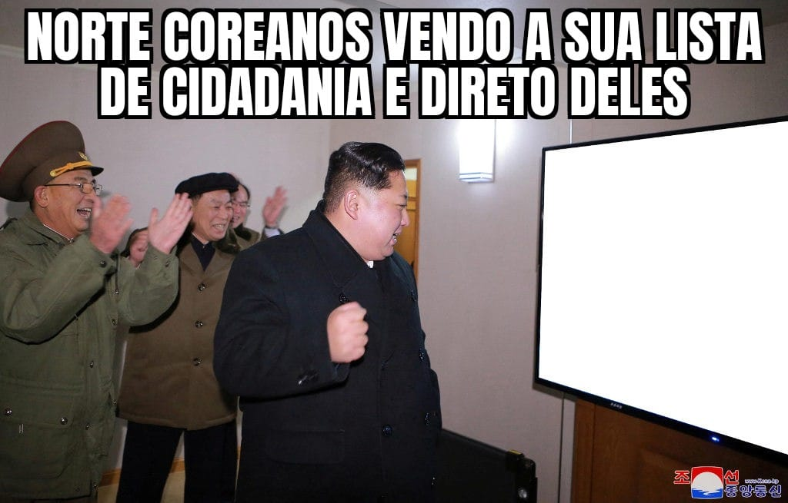

<html lang="en">
    <head>
        <!-- Global site tag (gtag.js) - Google Analytics -->
        <script async="" src="https://www.googletagmanager.com/gtag/js?id=G-NZE94Z7E5W"></script>
        <script>
            window.dataLayer = window.dataLayer || [];
    
            function gtag() {
                dataLayer.push(arguments);
            }
            gtag('js', new Date());
    
            gtag('config', 'G-NZE94Z7E5W');
        </script>

        <meta name="msapplication-TileColor" content="#da532c">
        <meta name="theme-color" content="#ffffff">

        <title>commandbat</title>
        <!-- <link rel=”shortcut icon” href=”favicon.ico” /> -->
        <link rel="stylesheet" href="./css/style.css">
    
    </head>
    

</html>
<body>
    <main>
        <h1> Da Internet: </h1>
        <br>
        <h3>A imagem retrata as condições precárias que a maioria da população do Brasil, o que vai contra a constituição federal</h3>
        <h2> Feito pelo grupo: </h2>
        
        <h3>A imagem retrata uma crítica a Coreia do Norte por ser um país completamente fechado e sua população sofrer com falta de liberdade de expressão e manipulação por pate da imprensa que é controlada pelo governo Comunista</h3>
    </main>
</body>
